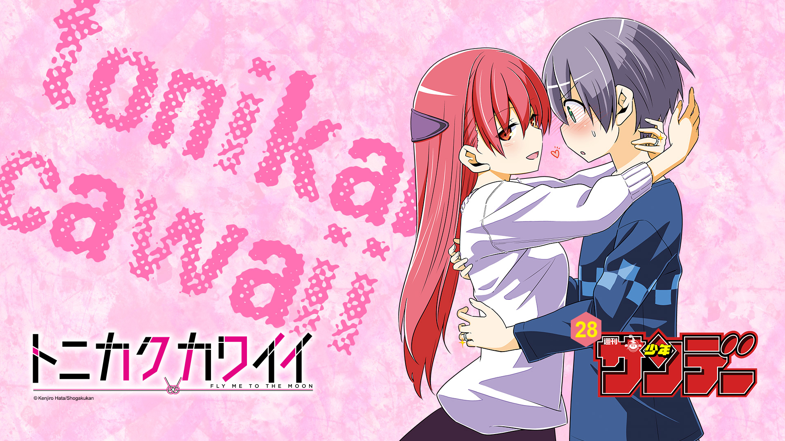
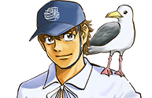
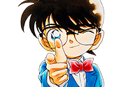
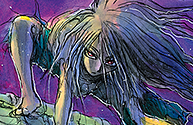
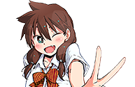
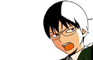
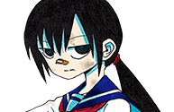
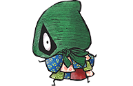

Los puestos y comentarios de los autores de la Weekly Shonen Sunday de esta semana.

La pregunta de esta semana
"¿Con que decoras tu casa o tú lugar de trabajo?"
MAO

Reimpresiones de ilustraciones de "Ashita no Joe".
Ponkotsu-chan Kenshochuu
Fotos de gatos.
Be Blues!

Diría que exhibo trofeos en mi casa pero realmente los tiro por ahí y los dejo dónde caen...
Maiko-san chi no Makanai-san

Cigarrillos autografiados por Adachi Mitsuru.
Daiku no Hato

Con regalos que me mandan, normalmente cosas que ya había firmado.
Fire Rabbit!!

Los regalos de cumpleaños que recibo de mi familia!
Yuko sae tatakaeba
(No es tanto como que los tenga como decoración si no que los almaceno) ...pero son cartas de los fans!
Detective Conan

Un dibujo de Minami-chan firmado por Adachi-sensei. (Lol)
Komi-san wa komyusho desu
Impresiones de prueba del logo de Komi-san!
Shinigami Bocchan to Kuro Maid
El volumen 6 ya está a la venta. Disfrutadlo.
Kimi wa 008

Un póster de "El Señor de los Anillos" que obtuve hace diez años... pero no tiene especial importancia para mi. ^^;;
Souboutei Kowasubeshi

Estáis hablando con un fanático coleccionista. Tengo un modelo de Zat Rabbit Panda. (Lol) (NdT- Es un vehículo de Ultraman)
Amano Megumi wa suki darake!

Tengo autógrafos de varios creadores.
Aozakura Bouei daigakkou Monogatari

Una punta de boli de un "G Pen" que Rumiko Takahashi me dio.
SWITCH

Botellas PET vacías. (NdT- son botellas fáciles de reciclar por los materiales con que están hechas)
Maoujo de Oyasumi

Tengo un montón de joyería porque me encanta, pero si un alien viese mi colección se preguntarían porque tengo tantas rocas.
Chrono Magia: Infinity Gear

Una ilustración firmada por Gosho Aoyama.
Zettai Karen Children
Modelos de plástico sin abrir que llevo guardando por años, quizá en este punto debería decir que los estoy acumulando?
Hoankan Evans no Uso ~Dead or Love~

Una gorra sin usar de KSM X KSG está colgada en mi pared.
Birdmen

No estoy seguro si tiene importancia para mi o no, pero tengo un busto de Nike que compre cuando empecé mi primera serialización.
Sokyuu no Ariadne

Un Claymore. (NdT- Estoy seguro de que se refiere a su antigua serialización "Claymore" y no una bomba, hah.)
Undine ha Kyou mo Koi wo suru ka?

Siempre he tenido un Búho de peluche por ahí.
RYOKO

Autógrafos de mis maestros, profesores y ayudantes. Un piso de alquiler misterioso.
Tantei Xeno to Nanatsu no Satsujin Misshitsu
"Cyborg Warrior Vega" y "Jabberwock".
Gofun go no Sekai

Un dibujo autografiado que Aoyama-sensei me dibujó!!
Anonatsu 1959

Un dibujo de Bishamonten que mi abuelo dibujó. (NdT- Tmabien conocido como Vaisravana, un dios budista.)
Youkai Giga

Lágrimas de Akina Nakamori. (TN- Nakamori es una cantante, y Satou probablemente se refiere a uno de sus sencillos "I'm not made of tears" (no estoy hecha de lágrimas) estrenada en 1984.)
Tokaichi Hitoribocchi Nouen

Reproducciones de ilustraciones de "Touch" y "Buddha".
Tonikaku Cawaii
Kenjiro Hata
iPhone.